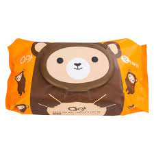

Khăn giấy ướt cho trẻ sơ sinh là vật dụng quen thuộc với các bà mẹ khi chăm sóc, vệ sinh cho bé yêu trong những năm tháng đầu đời. Tuy nhiên, đã là sản phẩm sử dụng cho trẻ sơ sinh, mẹ nên lưu ý chọn những loại khăn ướt tốt và an toàn nhất, tránh các sản phẩm kém chất lượng, không rõ nguồn gốc gây ảnh hưởng đến làn da và sức khỏe của trẻ. Hãy cùng TwoDee điểm danh những loại khăn giấy ướt cho trẻ sơ sinh tốt nhất hiện nay nhé!
Khăn giấy ướt là loại khăn được làm từ vải không dệt có công dụng làm sạch các vết bẩn một cách nhanh chóng. Đây được xem là trợ thủ đắc lực không thể thiếu đối với những gia đình có con nhỏ bởi các bé thường xuyên đi ngoài liên tục, mẹ luôn phải vệ sinh cho con. Khăn giấy ướt thích hợp cho việc thay tã và làm sạch da của trẻ, đảm bảo làn da nhạy cảm của bé sạch sẽ mà không gây dị ứng, kích ứng. Đặc biệt, sử dụng khăn giấy ướt để vệ sinh cho bé sẽ hạn chế được việc làm đau rát da của trẻ so với khi dùng khăn giấy khô hoặc khăn xô thông thường. Ngoài ra, giấy ướt còn có thể sử dụng để lau mặt, tay hoặc bất kỳ bộ phận nào trên cơ thể, giúp loại bỏ bụi bẩn, vi khuẩn và mồ hôi. Bên cạnh an toàn cho trẻ, khăn giấy ướt còn cực kì tiện lợi cho bố mẹ. Loại khăn này chỉ sử dụng 1 lần giúp bố mẹ tiết kiệm thời gian trong việc giặt sạch và phơi khô. Đồng thời có thể mang theo trong túi đồ mỗi khi ra ngoài, cực kỳ tiện lợi trong việc chăm sóc con.
Hiện nay, trên thị trường xuất hiện rất nhiều sản phẩm khăn giấy ướt với giá cả khác nhau, dẫn đến chất lượng cũng khác nhau. Tuy nhiên, nếu mẹ không tìm hiểu kỹ sẽ dễ mua phải những hàng kém chất lượng và không an toàn cho trẻ. Để con yêu có những trải nghiệm tuyệt vời trong những năm tháng đầu đời, mẹ có thể chọn mua các sản phẩm khăn ướt dưới đây.
Huggies là một thương hiệu được đông đảo bà mẹ ở nhiều quốc gia tin tưởng lựa chọn. Khăn giấy ướt Huggies chứa thành phần hoàn toàn lành tính, không có cồn, Paraben hay MIT, tuyệt đối an toàn cho làn da nhạy cảm của trẻ sơ sinh. Sản phầm đã được chứng nhận Y khoa, cam kết an toàn cho da nhạy cảm của bé.
Đặc biệt, khăn ướt Huggies có hàm lượng bột giấy tự nhiên cao, tăng hiệu quả làm sạch gấp 4 lần so với các loại khăn giấy ướt thông thường. Nhờ đó, sản phẩm hỗ trợ loại bỏ tới 99% vi khuẩn gây hại, giúp bé duy trì làn da sạch thoáng, mềm mại và căng mịn. Sự ưa chuộng và tin tưởng của hàng triệu mẹ trên khắp thế giới chính là minh chứng cho hiệu quả và sự hài lòng khi sử dụng sản phẩm này.
Khăn ướt Bobby đến từ thương hiệu nổi tiếng Diana, chuyên cung cấp những sản phẩm cao cấp dành cho trẻ nhỏ. Khăn ướt Bobby được sản xuất từ chất liệu vải không dệt chất lượng cao và nước tinh khiết. Công thức dịu nhẹ nên lành tính, không gây kích ứng cho da. Công nghệ Nano Silver với các hạt phân tử Nano Bạc giúp tăng cường khả năng tiêu diệt các vi khuẩn bám trên bề mặt da. Sản phẩm này là một lựa chọn tốt để chăm sóc và làm sạch cho trẻ sơ sinh và trẻ nhỏ.
Khăn lau Mamamy là sản phẩm được sản xuất tại Việt Nam theo tiêu chuẩn quốc tế. Sản phẩm đã đạt chứng nhận không hóa chất bảo quản được cấp bởi SGS của Thụy Sĩ và chứng nhận không kích ứng cho da từ Allergy UK. Khăn giấy ướt Mamamy được làm từ vải không dệt 2 chiều cao cấp giúp thấm hút tốt, không tạo xơ và có khả năng đàn hồi cao. Sản phẩm được giữ ẩm bằng 99% nước tinh khiết thông qua công nghệ lọc nước EDI hiện đại. Điều này đảm bảo sản phẩm thích hợp và an toàn khi tiếp xúc với làn da mỏng manh của trẻ nhỏ.
Ngoài ra, thành phần của giấy ướt Mamary còn được bổ sung tinh chất dưỡng ẩm, không chứa cồn hay các chất tạo mùi độc hại, mang lại sự mềm mại cho làn da của bé yêu.
Khăn giấy ướt Merries cũng nằm trong top những sản phẩm giấy ướt được các bà mẹ tin dùng. Bề mặt khăn ướt Merries có thiết kế lỗ 3D giúp lấy sạch các vết bẩn nhanh chóng, không cần lau nhiều lần gây đau rát da trẻ.
Ngoài ra, sản phẩm có thành phần chiết xuất từ lá cây phỉ thiên nhiên có tác dụng bổ sung thêm tinh chất giữ ẩm để cân bằng độ ẩm tự nhiên cho làn da bé. Đặc biệt, sản phẩm không chứa cồn, không chứa mùi hương, tuyệt đối an toàn và thoải mái cho bé.
Agi là sản phẩm đến từ Hàn Quốc với đặc điểm nổi bật được sản xuất từ các thành phần tự nhiên, an toàn và lành tính cho trẻ nhỏ. Sản phẩm khăn ướt Agi được làm từ chất liệu vải không dệt cotton cao cấp mềm mại, không xơ, không nhờn dính. Bên cạnh đó, sản phẩm còn có khả năng giữ ẩm, không chứa cồn và các thành phần gây kích ứng, cực kỳ an toàn cho làn da của trẻ.
KOKOFiT được sản xuất 100% tại Hàn Quốc với thành phần thiên nhiên. Toàn bộ nguyên liệu được chọn lựa kỹ càng từ các nhà cung cấp hàng đầu thế giới và sản xuất tại các nhà máy đạt tiêu chuẩn vệ sinh. Khăn giấy ướt cho bé KOKOFiT có đặc tính mềm mại và dịu nhẹ với làn da. Sản phẩm còn đạt chứng nhận Derma Test về mức độ an toàn dành cho làn da nhạy cảm của bé.
Giấy ướt Kokofit được thiết kế với nắp đậy tiện dụng và khả năng rút dễ dàng, giúp mẹ sử dụng trong thời gian dài mà không phải lo lắng chất lượng của khăn bị ảnh hưởng. Sản phẩm thân thiện với môi trường, chứa 50% vải rayon, loại vải dễ phân hủy trong môi trường tự nhiên, hạn chế kích ứng và lau sạch.
Sản phẩm khăn giấy ướt Mamago được sản xuất bằng công nghệ hiện đại với thành phần 99,9% nước tinh khiết đã qua hệ thống xử lý hiện đại. Đặc biệt, chiết xuất tinh chất lô hội tự nhiên và vitamin E có trong khăn giấy giúp sản phẩm có tác dụng dưỡng ẩm, chống hăm, chống rôm sảy và ngăn ngừa vi khuẩn tự nhiên hiệu quả.
Với tiêu chí 4 không: Không Paraben – Không cồn – Không hương liệu – Không MIT, MCT, giấy ướt Mamago mang đến sự an tâm cho mẹ khi sử dụng. Sản phẩm thích hợp sử dụng khi bé ăn uống, thay tã, lau mồ hôi. Đồng thời hỗ trợ bảo vệ làn da, giữ cho da bé luôn khô ráo và sạch sẽ.